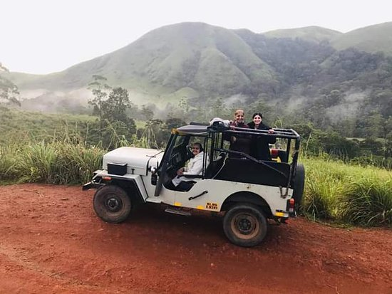
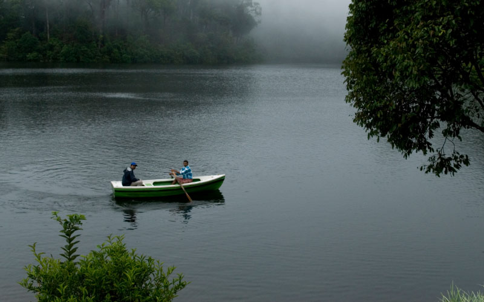

A Glimpse of Gavi🍃
The Gavi is a village in Kerala's Pathanamthitta district, Gavi offers an unforgettable journey through thick forests, serene lakes, and abundant wildlife, a true paradise for anyone looking to escape into the wild. The moment we entered the deep forest path, a sense of calm swept over me-the chirping birds,the rustle of leaves,and the cool breeze carried the scent of wild sandalwood. It wasn't just a trip; it was a connection with the raw,untouched beauty of the western Ghats.

Thrilling activites in Gavi🍃
Incredible trekking experience
At Gavi, you can have incredible trekking experiences, which are supervised by trained locals. Gavi is also a heaven for birdwatchers, there are more than 260 species of birds including hornbill, woodpecker and kingfishers, and even a tiger paw print or two! From Gavi, you can even trek to Sabarimala Ayyappan Temple, a sacred Hindu pilgrimage centre of India.
Gavi Lake and Canoeing
After settling in, head out to Gavi Lake, a serene spot surrounded by dense forest. Here, you can rent a canoe to explore the pristine waters and observe various bird species along the lake’s edge. The tranquil atmosphere and natural beauty make this the perfect setting to unwind. Canoeing here is a great way to get close to nature, with chances of spotting kingfishers, herons, and other native birds.
